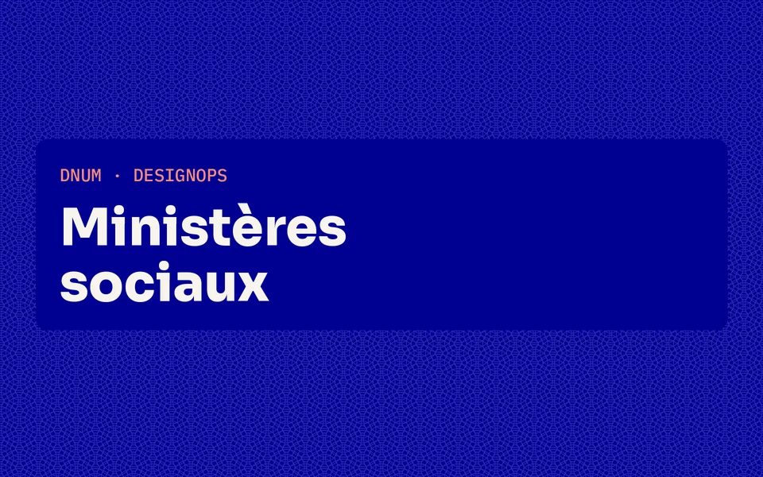
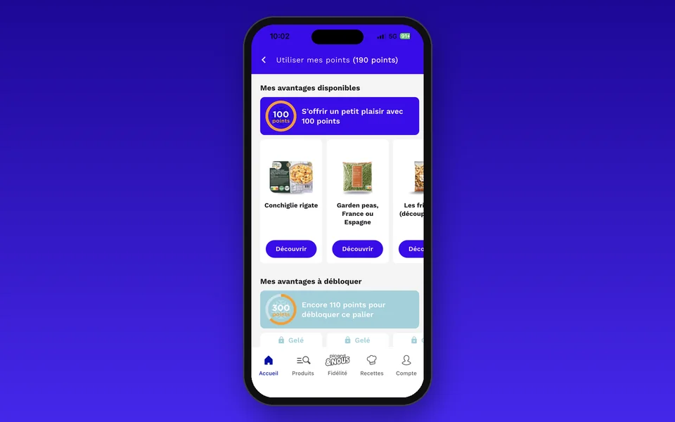
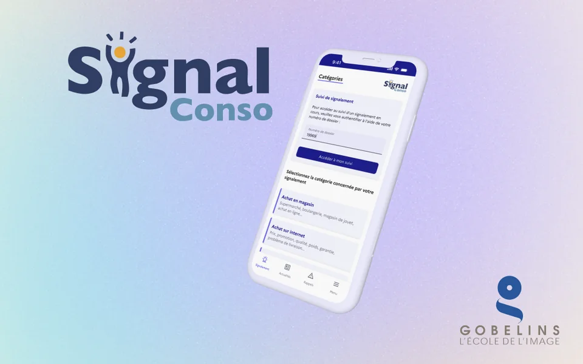
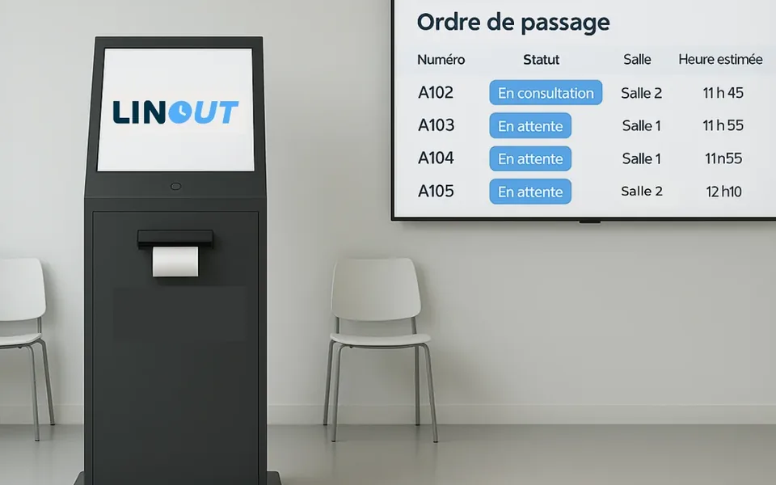
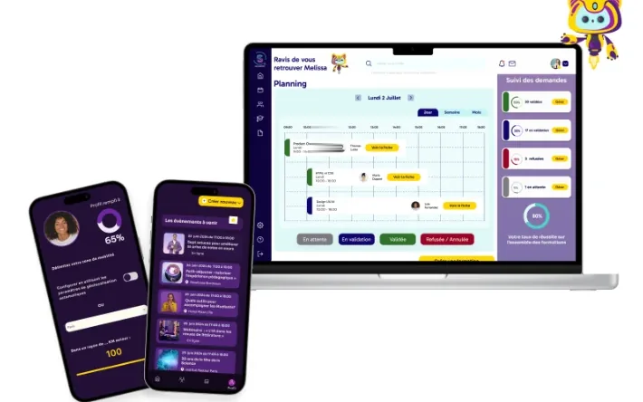
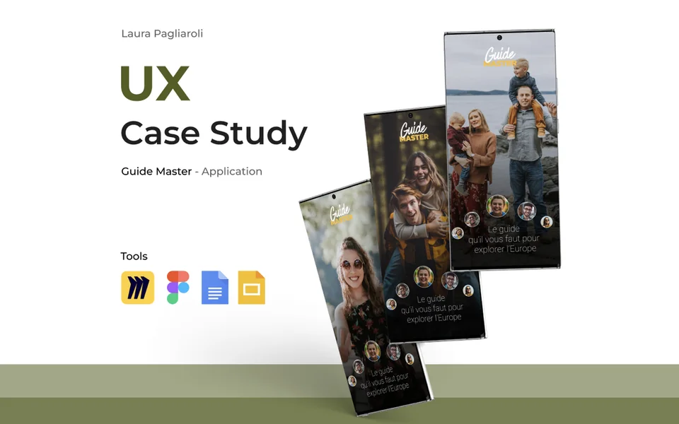

Public sector · DesignOps2026 – present
UX Research · Product Discovery · Paris
As a UX Researcher with a product mindset, I lead research end to end, from framing the question to the roadmap decision, for large organisations and public services. In French, Italian, English and Spanish.
Open to UX Research & Product Discovery roles and freelance missions · Paris, hybrid or remote
Each case follows the same thread: the problem, what I did, and the decision it led to.

Public sector · DesignOps2026 – present

Retail · Web & mobile app2024 – 2025

Public sector · Citizen service2024

Health · Entrepreneurial project2024 – 2025

EdTech · Mobile & desktop app2024

Travel · Mobile app2024
About
I hold a Master's in Digital Product & Service Management/Design from Gobelins Paris and bring over 13 years of experience in international and key-account environments. I work at the crossroads of UX Research and Product Discovery: I run audits, interviews, tests and workshops, then turn what I learn into prioritised recommendations that fit the roadmap.
Before UX, customer relations at Air France and international B2B sales taught me to decode needs, manage stakeholders with conflicting interests and prioritise under constraints.
Outside work, a passion for Japan, where I find what I love about UX: attention to detail and the art of simplicity.
Approach & skills
Research is only useful when it serves what users really need. I plan every study backwards from the decision it has to inform.
Align the research question with business KPIs and the roadmap, with Product and stakeholders.
Interviews, usability tests, surveys and workshops, run in the users' own language.
Structured synthesis into a few prioritised insights, each backed by evidence.
Actionable recommendations fed into the roadmap and every sprint through continuous discovery.
Tools · Figma, FigJam, Miro, Notion, Claude, GitHub
Testimonials
Laura was a real pleasure to work with! On every new feature, she showed an excellent grasp of the business stakes and delivered high-quality work, both in her mockups and in the clarity and relevance of her choices.
I worked with Laura in Picard's Digital Factory, a multidisciplinary team. I highly recommend her for her professionalism, her determination and how effectively she identifies and gathers user needs, preparing and running user tests all the way to presenting results to business teams, while turning her insights into a complete UX flow.
If you are looking for someone professional, reliable and skilled, I highly recommend Laura. She is a talented UX researcher with whom I had the great pleasure of sharing a year at Gobelins. She listens to users and colleagues alike, and uses her versatility to lead the projects she works on to success.
Laura is a dedicated and highly professional user research expert!
Work with me
Permanent role
For large organisations and the public sector that want research built into product decisions.
Freelance mission
A clear frame: kick-off, research plan, fieldwork, synthesis, then a decision workshop with your team.
Contact
A role, a mission or a research question: write to me and I'll reply within two working days.